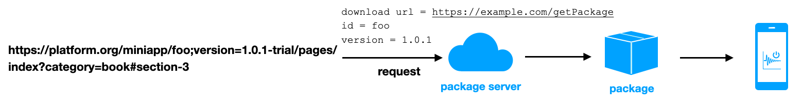

This specification defines how MiniApps are located, which is called MiniApp Addressing, including the specifications for specific MiniApp URI syntax components based on the URI specification, and the process to dereference the MiniApp URI. Implementing this specification enables the user agent to locate the resources of MiniApp.
本规范定义了 MiniApp Addressing 的方式，包含基于 URI 规范之上的 MiniApp URI 的具体语法组件的规格说明，以及解引用 MiniApp URI 的过程。实现本规范，能使得 user agent 能够定位 MiniApp 的资源。
Status of This Document
This section describes the status of this
document at the time of its publication. A list of current W3C
publications and the latest revision of this technical report can be found
in the W3C technical reports index at
https://www.w3.org/TR/.
The Working Group is publishing this specification as a Draft Note to encourage early review. This specification is not yet on the W3C standards track.
Group Draft Notes are not endorsed by
W3C nor its Members.
This is a draft document and may be updated, replaced or obsoleted by other
documents at any time. It is inappropriate to cite this document as other
than work in progress.
The
W3C Patent
Policy
does not carry any licensing requirements or commitments on this
document.
Mini apps are applications that run on the user agent and are based on Web technology combined with native application technology. The [MINIAPP-PACKAGING] specification defines the form of resources in the mini app, as well as the specific path in the mini app and the mapped path relationship in the MiniApp URI scheme.
The source used by the user agent to get the MiniApp package, called package provider in the following.
小程序是运行在 user agent 上的，基于 Web 技术，结合原生应用技术实现的应用。在 [MINIAPP-PACKAGING] 规范中定义了小程序内资源的形式，以及小程序内具体的资源路径和 MiniApp URI 中的 path 映射关系。
用于 user agent 获取小程序包的来源，在下文中称为 package provider。
MiniApp Addressing is a technology that uniquely corresponds to a specific resource within a mini app. The MiniApp Addressing uses the Mobile Deep Linking technology. The prefix of the URI depends on how the device system supports it and which is selected by the user agent. The rest part of the URI follows the specification in the syntax section below, which describes the specifications and definitions of some syntax components of the URI in the mini app. Parts not covered in these specifications follow the URI specifications and are not repeated here.
MiniApp Addressing 是用于唯一对应一个小程序内的具体资源的技术。MiniApp Addressing 使用了 Mobile Deep Linking 技术，URI 的前缀取决于系统的支持方式及 user agent 所选取的方式。URI 的其他语法部分遵循下文中 MiniApp URI 语法章节中的规范，该章节描述了 URI 的某些语法部件在小程序中的规范与含义，本规范未涉及到的部分，沿用 URI 的规范，不再在本规范中赘述。
<!doctype html><html><ahref="platform://miniapp/foo;version=1.0.1-trial/pages/index?category=book#section-3">open a MiniApp</a></html>
Embed an a element with the href attribute as the mini app URI on the web page. When a user clicks the link, if the environment on which the web page is running can't handle the URL, the os will distributes it to a proper user agent based on the URI prefix. And the user agent receives the URI and dereferences it. Based on the host, id, version in the URI, a request is made to a specific package server that can provide mini app package upload and download services, to download and open the corresponding mini app.
在 Web 页面中嵌入一个 href 属性为小程序 URI 的 a 元素。当用户点击该链接时，如果 Web 页面所运行的环境不能正确处理该 URL，则会由操作系统根据 URI 的前缀将其分发能处理的 user agent。User agent 会接收到该 URI，并对该 URI 解引用，根据 URI 中的 id、version 请求特定的能提供小程序包上传和下载服务的 package server，下载并打开对应的小程序。
As shown in the following flowchart, the package is a collection of mini app resource packages, and the content and structure of the packages are defined in the packaging specification.
2.2
Example 2: Access a mini app package in a development environment用例2：在开发环境中访问小程序包
The User agent can provide debugging tools for developers to place the mini app package in the user agent development environment. Developers can obtain the unique id and version number of the mini app in the development environment, such as "foo; version = 1.0.1". Developers can concatenate it into a MiniApp URI that opens the mini app:
User agent 可提供调试工具，用于开发者将小程序包放置于 user agent 开发环境中。开发者有能力获取该开发中的小程序的唯一 id 和版本号，比如 “foo;version=1.0.1”。开发者可将其拼接为能打开该小程序的 MiniApp URI：
When the user agent dereferences the URI, it obtains the mini app package with the specific identification "foo; version = 1.0.1" in a certain way, and then opens and runs the mini app.
当 user agent 解引用该 URI 时，会使用某种方式获取到此特定标识为 “foo;version=1.0.1” 的小程序包，并打开和运行。
Fig. 2 Open a MiniApp in development environment在开发环境中打开一个小程序
3.
User agent客户端
The user agent of Mini App corresponds to the native client implementing this specification. The user agent can parse the MiniApp URI protocol according to the rules of this specification, and it can also point to a certain resource of the unique and correct mini app package based on the MiniApp URI.
小程序对应的 user agent 即实现了本规范的原生客户端。 User agent 能根据本规范制定的规则解析 MiniApp URI 协议，能根据 MiniApp URI 指向唯一的、正确的小程序包的某资源。
4.
Syntax语法
The MiniApp URI syntax is defined using [ABNF], using host, path-abempty, query, fragment, and unreserved from [RFC3986].
MiniApp URI 语法使用 [ABNF] 定义，引入 [RFC3986] 的 host、path-abempty、query、fragment 和 unreserved。
miniappuri = uri-prefix uri-infix identify path-abempty ["?" query ] ["#" fragment ]
uri-prefix = (custom-scheme "://") / ("https://" host)
custom-scheme = 1*unreserved
uri-infix = "miniapp"identify = id [";version=" version]
id = 1*unreserved
version = *unreserved
The following are the MiniApp URI examples that conform to this syntax rule:
以下是符合本语法规则的 MiniApp URI 示例：
The strings of the MiniApp URI scheme must conform to the character set rules of the URI declared in [RFC3986].
custom-scheme is a miniapp platform identifier to uniquely identify a user agent on a mobile device, usually registered in the operating system (say mobile deep linking technology)
custom-scheme 是 miniapp 平台的标识，通常会在操作系统中注册（参考 deep linking 技术）。
uri-prefix is required, either custom-scheme or https.
uri-prefix 为必填项，custom-scheme 和 https 的方式二选一。
the semantic and syntactic rules for custom-scheme are the same as the scheme in [RFC3986], but the custom scheme does not need to be registered in iana. User agent should ensures that itself is unique in device.
id is the logical identifier of the mini app under a specific host, which along with version, points to the unique mini app package of a host. There may be multiple versions of a mini app corresponding to an id under a specific host.
id 是特定的 host 下的小程序逻辑标识符，与 version 共同指向了 user agent 所使用的 package provider 下唯一的小程序包。在特定的 package provider 下，一个 id 对应的小程序可能会存在多个版本。
id is a mandatory field.
id 为必填项。
id consists of non-reserved characters and is not case sensitive.
id 由非保留字符组成，大小写不敏感。
The package provider that the user agent depends on must guarantee the uniqueness of the id.
user agent 所依赖的 package provider 必须保证 id 的唯一性。
4.3 Version
Version and id together represent the unique mini app package of the user agent.
version 与 id 共同表示了 user agent 下唯一的小程序包。
Version is optional, and the user agent can make rules for version, to provide information such as version and development method.
version 为可选项，user agent 可以对 version 制定规则，用于提供版本、开发方式等信息。
Version consists of non-reserved characters and is not case sensitive.
version 由非保留字符组成，大小写不敏感。
In most usage scenarios, it is recommended that the version is null, and the version is managed by user agent and package provider.
多数使用场景下建议 version 为空，由 user agent 及 package provider 进行版本的管理。
4.4
Hosthost
The semantic rules for the host and port are consistent with the host in [RFC3986] and the port in [RFC3986].
host has nothing to do with how and where the MiniApp packages is downloaded.
host 与 miniapp package 下载方式及下载地址无关。
4.5 Path
Path (optional) represents the path of the mini app resource to be opened. The packaging specification defines the resource form, how to locate specific resource path in the package through path, and handling of the user agent when the path value is null or the path pointed by path does not exist.
This section describes how the user agent obtains the corresponding mini app package based on MiniApp URI, as well as some error handling.
此节描述了 user agent 如何根据 MiniApp URI 获得相应的小程序包，以及一些错误的处理。
The rules for dereferencing are as follows:
解引用的规则如下：
The OS recognizes the MiniApp URI and distributed it to the specified user agent based on the uri-prefix of the URI
OS 识别 MiniApp URI。并根据 URI 的 uri-prefix 分发到指定的 platform 打开。
User agent recognizes MiniApp URI. If the uri-infix of this URI is miniapp, the user agent considers it as a MiniApp URI and parses the syntax components according to the syntax rules specified in this specification.
user agent 识别 MiniApp URI。如果该 URI 的 uri-infix 为 miniapp，则 user agent 认为其是 MiniApp URI，并以本规范中规定的语法规则解析语法部件。
The user agent parses the syntax components of MiniApp URI according to the above syntax rules into id, version, , path, query, and fragment. If the syntax parsing fails, the user agent terminates this dereferencing algorithm.
user agent 解析 MiniApp URI 语法部件。User agent 依据上述语法规则，将 MiniApp URI 解析为 id、version、path、 query 和 fragment 语法部件。如果语法解析失败，user agent 则终止此解引用算法。
User agent usually has two or more ways to get the MiniApp package specified by id, either from the the local file path, or from a remote downloading package server that provided package download service
The user agent uses id as a mini app logic identifier for package provider. The mini app with specified id may have multiple versions in the package provider
user agent 将 id 作为 package provider 下的小程序逻辑标识符。在特定 package provider 下，一个指定 id 的小程序可能会存在多个版本。
The user agent uses version as the version information of the mini app package with the specified id. The user agent handles different existence modes of version: For example
user agent 将 version 作为指定 id 的小程序包的版本信息。User agent 需要处理 version 的不同存在方式：比如
When version has a value, the version is used as the version information of the mini app package, which along with id, points to the unique mini app package of a package provider.
当 version 存在值时，将 version 作为小程序包的版本信息，与 id 共同指向某个 package provider 唯一的小程序包。
When version is null, the mini app package with specified id is customized as an mini app package provider (package server or user agent), which can be the latest version or the default version of the mini app package with specified id, or the mini app package of a version that conforms to a mapping rule.
当 version 为空值时，将会以小程序包 provider （package server or user agent）自定义提供指定 id 的小程序包，可以是该指定 id 的小程序包的最新版本、或者是默认版本、或者是符合某种映射规则的版本的小程序包。
In most usage scenarios, it is recommended that the version is null, and the version is managed by the user agent and package provider.
多数使用场景下建议 version 为空，由 user agent 及 package provider 进行版本的管理。
The user agent obtains the mini app package based on the parsed provider information and the identification information of the mini app (e.g., id, version). The user agent handles different situations of the provider:
user agent 根据解析到的 provider 的信息及小程序的标识信息（比如 id、version）获取小程序的包。User agent 需要处理 provider 不同的情况：
When provider is a package server, the user agent sends an HTTPS Request with mini app identification information to the server; the final mini app package is obtained by handling the Response body returned by the package server.
当 provider 为 package server 时，user agent 向该服务器发起携带了小程序标识信息的 HTTPS Request；通过处理 package server 返回的 Response body 得到最终的小程序包。
When provider is a custom method of the user agent, the user agent obtains the mini app package with specified mini app identification information through the custom method.
当 provider 为 user agent 自定义的方式时，user agent 通过该自定义方式获取指定小程序标识信息的小程序包。
The user agent conducts corresponding processing based on the results of the obtained mini app package:
user agent 根据获取小程序包的结果，进行相应的处理：
When the mini app package is obtained successfully, the following processing is performed.
当获取小程序包成功时，则进行接下来的处理。
When obtaining the mini app package fails, exception handling is performed based on the cause of failure. For example, when the user agent cannot obtain the package from the host, the error code and error message are returned.
当获取小程序包失败时，则根据失败原因，做出异常处理。例如 user agent 从 host 无法获取到包时，返回错误码与错误信息。
The user agent locates the corresponding mini app resource based on the path, query, fragment and the method defined in MiniApp Manifest specification.
user agent 根据 path、query、fragment 以及 小程序 Manifest 规范 中定义的方式定位到对应的小程序资源。
The user agent MUST handle any failure during dereferencing and provide appropriate information prompts.
user agent MUST 处理解引用过程中任何失败的情况，并给出合适的信息提示。
6.
Use HTTPS as a network protocol to download MiniApp packages使用 HTTPS 协议作为下载小程序包的网络协议
This section is non-normative.
This section describes a use case scenario for a network protocol that uses HTTPS protocol as a request to download the mini app package.
If the URI does not conform to the syntax rules of MiniApp URI, the user agent does not respond or handle exceptions.
如果 URI 不符合 MiniApp URI 语法规则，则 User agent 不做响应或进行异常处理。
Use the HTTPS URL to get the package with the id and version as request parameters: https://example.com/getPackage?id=foo&version=1.0.1-trial
以 GET 请求将 id 和 version 作为请求参数，使用获取包的 URL 拼接完整 URL： https://example.com/getPackage?id=foo&version=1.0.1-trial
The user agent may implement HTTP cache control; it is recommended to use gzip as the encoding scheme (HTTP accept-encoding) and send HTTPS request message.
user agent may 实现 HTTP 缓存控件；推荐使用 gzip 作为编码方式（HTTP accept-encoding），发送 HTTPS 请求报文。
If the received request is not an HTTPS request, an HTTP 403 forbidden response is returned, and the request is terminated.
如果接受到请求不是 HTTPS 请求，则返回 HTTP 403 禁止响应，并终止此请求。
If the received request fails to pass authentication, an HTTP 403 forbidden response is returned, and the request is terminated.
如果接受到的请求未通过鉴权，则返回 HTTP 403 禁止响应，并终止此请求。
If the requested HTTP Method is not supported, an HTTP 501 Not Implemented response is returned, and the request is terminated.
如果该请求的 HTTP Method 不被支持，则返回 HTTP 501 Not Implemented 响应并终止此请求。
Based on the query or body carried in the requested URL, a mini app package with id “foo”, version “1.0.1” is returned. If it is not found, an HTTP 404 Not Found response is returned.
根据请求 URL 所携带的 query 或者 body， 返回 id 为 “foo”，version 为“1.0.1” 的小程序包。如果找不到，则返回 HTTP 404 Not Found 响应。
If it is successfully found, an HTTP 200 OK response is returned, and the mini app package is returned as the response body in the format specified by content-type.
如果成功找到，则以 HTTP 200 OK 响应，并将小程序包以 content-type 指定的格式作为响应主体返回。
The user agent determines whether the request is successful based on status and continues to parse the response body when status is 200. A failure exception is processed when status is not 200.
user agent 根据 status 来判断请求是否成功，当 status 为 200 时，则继续解析响应体。当 status 不为 200 时，则处理失败异常。
It is recommended to use the agreed unique identification field to reverify the package integrity.
建议使用约定的唯一标识字段再次校验包的完整性。
For downloaded mini app package, use the package format specified in the MiniApp Packaging specification to decompress.
As well as sections marked as non-normative, all authoring guidelines, diagrams, examples, and notes in this specification are non-normative. Everything else in this specification is normative.
本规范中的所有内容均为本草案的规范性内容，但明确标记为“非规范性”的部分、示例和注释除外。
There is one class of products that can conform to this specification, and that is the user agent above.
有一类产品可以声明符合此规范，即上文中的 user agent。
8.
Security Considerations安全性考虑
This section is non-normative.
The user agent needs to ensure the correctness of URI, avoid URI tampering and prevent phishing attacks, for example, by using the recommendations in [UTR36].
User agent 需要保证 URI 的正确性，避免 URI 篡改，防止钓鱼攻击。比如，[UTR36] 中的技术可用于解决一部分安全问题。
It is recommended that UA or sign signature are used to authenticate the request process on the package server side.
请求过程建议通过 UA 或者 sign 签名的方式，进行 package server 端的鉴权认证。
During the request process, it is recommended to check replay attacks using HMAC.
请求过程中，建议通过 HMAC 的方式进行防重放攻击检查。
During the request process, it is recommended to verify package integrity by abstract comparison of md5 or sha1.
请求过程中，建议通过 md5 或 sha1 的摘要比对方式，验证包完整性。
While parsing the Response by the user agent, it is recommended to protect the data package security through encryption and decryption.
user agent 解析 Response 过程中，建议通过加解密方式进行数据包的安全性保护。
When the user agent stores the package resource locally, it is necessary to ensure the storage security of files, to protect against malware attacks.
user agent 本地存储包资源时，需要保证文件的存储安全，防止恶意软件攻击。
A.
Acknowledgments致谢
The editors thank to Baidu Smart Mini Program team for reviewing this document over and over again, thank to the W3C MiniApps Community Group for providing a lot of valuable advice.